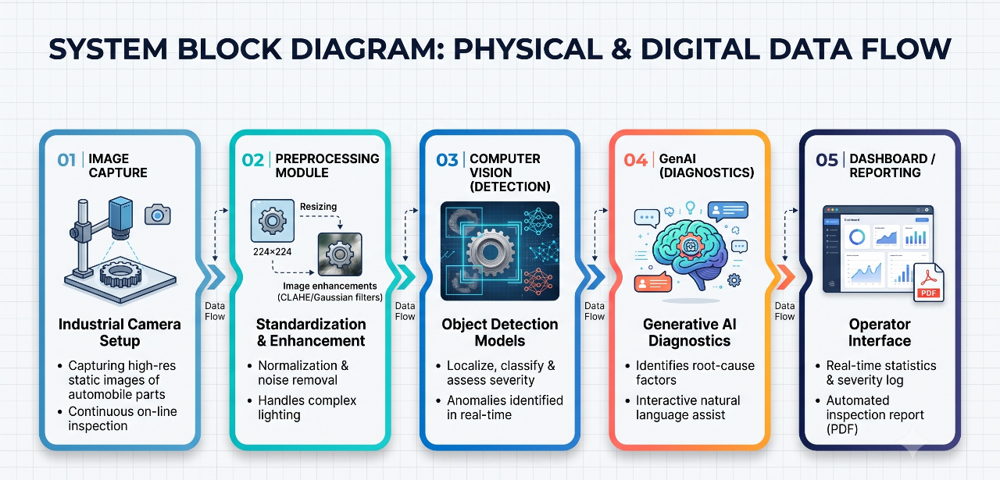

Section 05 • Architecture
The step-by-step physical and digital data flow of the inspection pipeline.
Stage 01
Image Acquisition
Capturing images of automobile parts on the production line using industrial camera setups.
Stage 02
Preprocessing
Adjusting images to handle complex surface geometries and dynamic factory lighting.
Stage 03
Pipeline Integration
Seamless connection between deep learning object detection and a GenAI diagnostic layer.

07